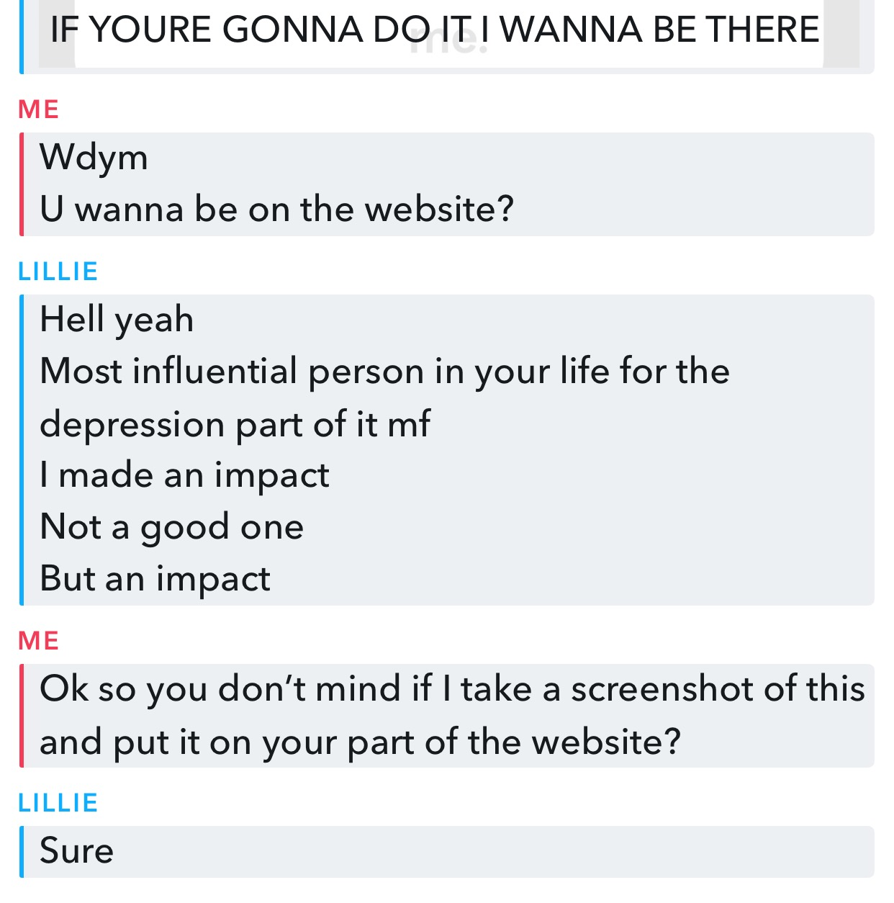

Blog
Entree #1(3.09.2021)
Today marks the day I finally host this website on
github. I started building this website around a month ago but until now I haven't
had the time to work on it more. I have asked for ideas for the website and have gotten some but
nothing substantial enough for the website(except for like one but it's more of an "I want credit for making
this guy depresso for a bit thing")

Lillie, you said you wanted to be on the website, you didn't say how much or what part
Entree #2(3.11.2021)
Tbh, I'm just writing this right now cause I'm bored(In school rn).
Today feels like any other day, and that's the problem. Y'know that feeling when you
just want something big to happen but everything is just so slow? That's what I'm feeling rn.
If anyone that knows me irl and has my number sees this website and is free to talk, HMU.